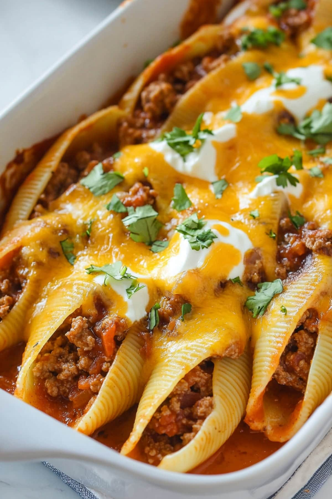

Featured Dinner Recipes
Stuffed Shells taco style
This recipe combines the comforting flavors of traditional stuffed shells with a zesty taco twist. Jumbo pasta shells are filled with a savory mixture of ground beef, cream cheese, and salsa, then smothered in red enchilada sauce and topped with melted cheddar cheese. Baked to perfection, these taco-style stuffed shells offer a delicious fusion of Italian and Mexican cuisines, making for a hearty and satisfying dinner that's sure to please the whole family.
Ingredients
- 1 box jumbo pasta shells
- 1 pound ground beef
- 4 oz cream cheese
- 1 cup salsa
- 2 cup shredded cheddar cheese
- 10 oz red enchilada sauce
Instructions
- Preheat oven to 375°F (190°C). Cook jumbo pasta shells according to package instructions until al dente. Drain and set aside.
- in a large skillet, cook ground beef on medium heat until browned and drained.
- add in cream cheese and salsa, stirring until cream cheese is melted and well combined.
- Fill each pasta shell with the beef and cheese mixture and place in a baking dish.
- Pour the enchilada sauce over the stuffed shells.
- Sprinkle shredded cheddar cheese on top of the sauce.
- Bake in the preheated oven for 25-30 minutes, or until the cheese is melted and bubbly. Let it cool for a few minutes before serving.
Sides
- mashed potatoes
- green beans
- corn on the cob
- coleslaw
- fried okra